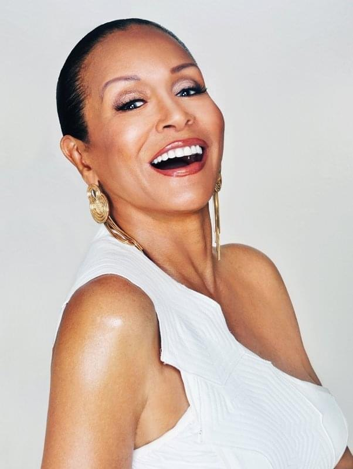

About Freda Payne
Freda Payne was identified as a talent at thirteen by Berry Gordy, years before Motown became shorthand for an era. Quincy Jones produced her first jazz album in 1963. She spent her formative years on the road with Duke Ellington, Pearl Bailey and Lionel Hampton — an apprenticeship no conservatory has ever managed to replicate.
She is not interpreting a tradition she studied. She is singing songs she learned in the rooms where they were made.
In 1970 she recorded Band of Gold, one of the defining vocal performances of its decade and a Grammy-nominated record. What the hit tends to obscure is that the jazz career came first and never stopped. Her Broadway credits include Jelly's Last Jam, Sophisticated Ladies and Blues in the Night.
Her memoir, written with Mark Bego, runs from Detroit through Motown, Europe, Invictus Records and Broadway — alongside Ellington, Sinatra, Sammy Davis Jr., Bob Hope and Sarah Vaughan.